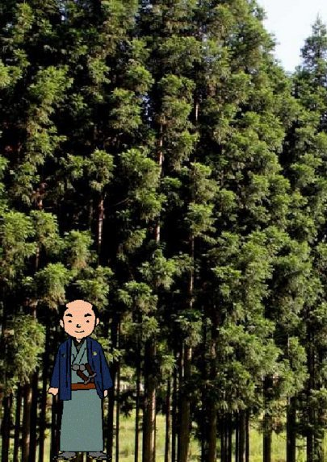
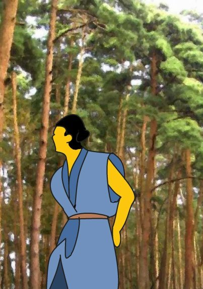
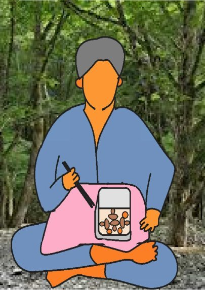
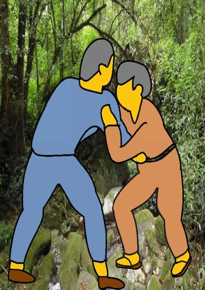
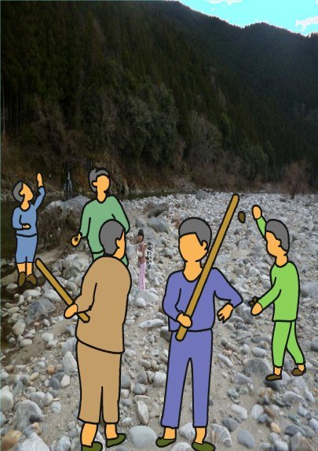
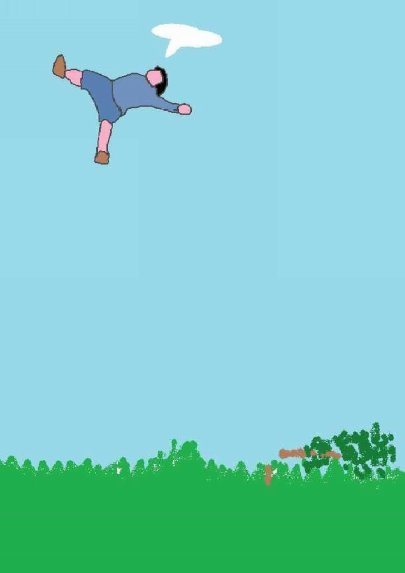
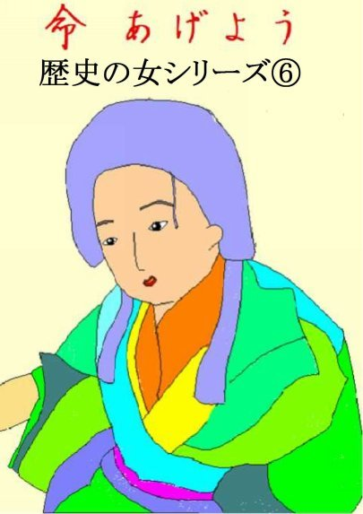
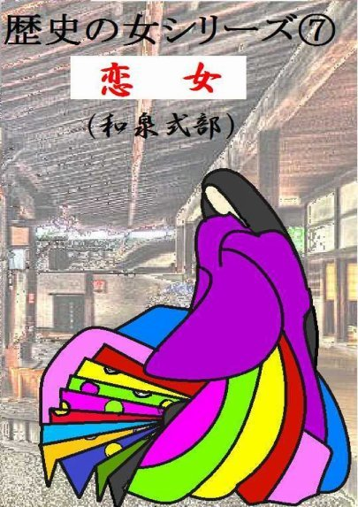

| ⑩赤松 | |
| 深川龍 | |
| UNKNOWN (2016) | |
第十話
森林の杉は天をつくように伸びておった。百年も前にご先祖が植えたもんで、杉谷の在のものたちの誇りじゃった。それに隣接して、これも立派な赤松林があった。福松の在のご先祖が百年も前に植えたものじゃった。今で云うと、三重県三重郡菰野町大字杉谷字尾高の南の辺りじゃろうかのう。
太い赤松は風を受けてさゎさゎーと白い雲を空の隅に掃き寄せておった。高い杉の木の方はたっぷりと青絵具をつけた絵筆で、赤松が掃いた白い雲のあとを真っ青に

塗っておった。
杉林と松林のさかい目で杉谷の若者と福松の若者がばったり出会おうた。さかい目の真ん中あたりに巨岩がある。二人はその岩によじ登って腰を下ろした。
「おまえの在所の杉は良う手入れが行き届いて立派なもんじゃ。」
「いやいや、おまえの在所の松も立派なもんじゃ。」
二人はお互いに相手の在所の山林をほめ合った。松は梁に、杉は柱に使うことが多かった。どちらがなくても良い家が建たなかった。だから、二つの在所は松と杉を仲良く分担し合ってきたのじゃった。
「赤松がはえておる所はわしらの山林じや。杉が生えて

おる所はおまえらの山林じゃ。よう分かるのう。お互いがしっかり守っていかにゃならん。」
杉谷の若者はうなずいた。
｢そうじゃとも。山の見回り仕事はたくさん歩かにゃならんで、疲れるのう。急な斜面を上ったり下りたりじゃ。飯でも食うか。」
二人の若者は背嚢から、水筒と弁当を取り出した。福松の若者は杉谷の若者の弁当のおかずをのぞき込んで、ちよっと首をかしげた。
｢おい、杉林で松茸がとれるかや。もしかして、こつちの山から盗んでいったもんじゃなかろうな。」
杉林の中に一本、何百年とも知れぬ大きな松の木があ

る。大人が二人でも抱きかかえられないほどの太さじゃった。杉谷の若者は顔色を変えて、その赤松を指さした。
｢おい、なんてことを言う。あれを見ろ。俺たちの杉林の中にも赤松ぐらいあるぞ。」
赤松の若者はにやっと笑った。
｢あの赤松の場所だけはわしらの在所の飛び地じや。先ほど、赤松の木がはえておる所は赤松の在、杉の生えておるところは杉谷の在と言うたばかりじゃないか。」
杉谷の若者は食べておったご飯粒を口から飛ばして大きな声を出した。
｢馬鹿言うな。あそこは杉谷の在所のものじゃ。」
福松の若者は意地悪そうな顔つきになった。
｢何じゃと、あの赤松が杉に見えるとでも言うのか。盗っ人めが。」
杉谷の若者は食っていた弁当を放り出すと、福松の若者に飛び掛かっていった。大きな岩の上で上になり下になり揉み合っておったが、菰野町大字千種字福松の若者の方が体格がちょっと良くて力もちょっと強かったから杉谷の若者は逆に組み敷かれてぼかすかと殴られてしもうた。
口から血を流して帰って来た杉谷の若者は悔しゅうてたまらん。うつむきながら、とぼとぼと在所にもどってきたんじゃ。

途中で仲間の若者たちに出会った。
「よっ、九郎じゃねえか。山の見回り仕事、ご苦労さんじゃったのう。今日は一人じゃったのか。」
「ああ、好高の奴、急に用事が出来たらしくて、来れなかったんでな。」
「どうした。口から血が出ておる。」
「ああ、何でもねえ。」
「おまえ、着物もずたずたじゃねえか。」
九郎は先ほどの悔しさが込み上げて来た。涙を堪えてくくっと声をもらした。
「何でもねえ。」
九郎の目は真っ赤になっておった。
「おまえ、泣いてるんじゃねえか。言ってみろ。何があっか。」
九郎はたえられなくなって、涙をぽろぽろとこぼした。
「福松の在所のマツにやられたんじゃ。」
「ばか野郎、杉谷の恥じゃ。マツなんぞにやられて。」
「俺もくやしい。奴はあの大きな赤松の生えている所は自分たちの飛び地じゃって、言ったんじゃ。」
「俺たちの杉林に生えている赤松のことか。」
「そうじゃとも。それで俺が奴に殴りかかった。」
今度は仲間の若者たちの方がいきり立った。
「よしっ、そんじゃ、こっちからやってやろうじゃないか。」
若者たちは福松の在所に行くと、小さな子を使ってマツを呼び出した。九郎は仲間がいるので心強い。
｢やい、先ほどは俺のことをよくも盗っ人と言ってくれたな。」
「おお、言ったがどうした。」
「おまえの方が盗っ人じゃ。俺たちの山林まで取ろうとしておるじゃないか。」
「ばか言うな。あそこは俺たちの領地じゃ。」
九郎の後から仲間の声が飛んだ。
「何だと、マツ。つけあがるんじゃねえ。」
九郎がマツの胸元を小突いた。マツは九郎に殴りかかった。同時に、福松の若者たちは一斉にマツに飛びかかってぼっかぼかに殴ってしまったんじゃ。
今度はマツの方が悔しゅうてならん。マツは在所へ戻ると、仲間を集めた。仲間はマツの腫れ上がった顔を見て同情した。
「えらい目にあったのう。そりゃ、いくらマツどんでも、大勢にゃかなわん。」
マツはどうしても、仕返しがしたくてならなんだ。
「杉谷の奴ら、俺たちの所から、松茸を盗んで行った。それを奴らに言ったら、このざまじゃ。」
「本当に、盗んでいったんか。」
「九郎の奴、どっさり、松茸を持っておった。
赤松が生えている方はわしらの在所のものじゃ。杉林に松茸が生えるわけが ねえ。」
「そりゃ、そうじゃ。」
「奴は杉林の中の赤松の下で取ったと言うが、そんな訳はねえ。」
「そりゃ、そうじゃ。」
「あの赤松が生えているところは俺らたちの飛び地じゃと言うてやった。そしたら、奴らに呼び出されてこのざまじゃ。俺らは悔しゅうてならん。」
「マツどんがやり返すって言うなら、俺らたちも行こうじゃないか。俺らたち も杉谷の奴らは好かん。」
福松の在所の若者たちはマツを先頭に杉谷に向かった。福松と杉谷の間の朝明川はかれて全部が河原になっておった。
杉谷の若者が河原に出て、ちょうど道普請に使う小石を大八車にひろい集めておった。その時、福松の若者たちが手に手に棍棒を持ってやって来た。杉谷の若者はすぐにマツが仲間を連れて仕返しに来たのだと分かった。
杉谷の若者は大八車を捨てて、在所に逃げ帰った。
「おおいっ、福松の奴らが仕返しに来たぞ。」

杉谷の若者たちも手に手に棍棒を持って集まった。
「よしっ、河原じゃ。」
杉谷の若者たちは朝明川の河原に出た。
「誰もおらんじゃないか。」
「俺らたちを恐れて逃げたんじゃ。俺らたちの方から出向いてやろうじゃない か。」
杉谷の若者たちが河原を渡り終えようとしたとき、堤防の繁みから石飛礫が飛んできた。河原の中とて、隠れる場所がない。杉谷の若者たちの耳元をびぃーん、びぃーんと唸って飛んで行ったんじゃ。杉谷の若者たちの二、三人に石飛礫が当たった。額が割れて血が飛び散った若者もおった。
「謀られた。もどれ、もどれ。」
赤松の若者たちが立ち上がってはやす。
「赤松が生えているところは俺らたちの飛び地じゃ。」
杉谷に逃げ帰った若者たちが相談を始めた。
「杉林の中にあの赤松がある限り、奴らはいつまでも飛び地じゃというに違 いない。あんなもの、切りたおせ。」
｢しかし、天にもとどく赤松じや。誰が切り倒すんじや。」
｢九郎、最初に喧嘩を始めたのはおまえじや。おまえがやれ。」
｢俺ら、いやだ。だって、あの松の木には天狗さんが住んでおるって言うじゃないか。」
｢天狗なんぞ住んでいる筈がなかろう。あれは福松の在の奴らが言うことじや。」
「赤松の奴らは俺らがあの松の木を切っておると、きっと邪魔しに来るぞ。」
「俺らたちがガードしてやる。」
結局、九郎が切り倒すことになった。
杉谷の若者たちは杉林の中の大きな赤松の根元に集まった。大きな赤松は風を受けてさゎさゎーと鳴っておった。
九郎は赤松の根元で大鋸を構えたが、なかなか切る気になれなかった。
「こんな大きな松を切るなんて、何だかかわいそうだな。」
「怖くなったのか。これを切らなけりゃ、ここは本当に奴らの飛び地になってしまうぞ。」
「じゃ、赤松の在所の奴らが来ないように、よう見張ってくれ。」
九郎は仕方なく大鋸の刃を赤松の幹に入れた。杉林の中の赤松は太さが大鋸の刃渡りの二倍もあったので木の周囲を廻りながら切った。風に揺れる幹の振動が大鋸の柄に響いてきた。
「おおい、いよいよ、倒れるぞ。」
大きな赤松はいつ動き出したか分からないほどゆったりと倒れ始めた。ぎぎっと声を出した。しかし、傾きかけると後は一気だった。
「九郎、離れろ。危ないぞ。」
赤松はどどーんと大きな音を立てて倒れた。その勢いで切った根元が跳ね上がった。九郎は逃げる間がなかった。跳ね飛ばされて天空に舞った。
「天狗じゃ。赤松の上で昼寝していた天狗が怒って九郎を飛ばしたんじゃ。」
墜ちた場所が竹成と榊の間じゃった。そうそう、九郎と書かれた墓がぽつんと一つ建っておるじゃろう。

(完）
深川龍
歴史の女シリーズ⑥、⑦
も読んでください。


- 1 -